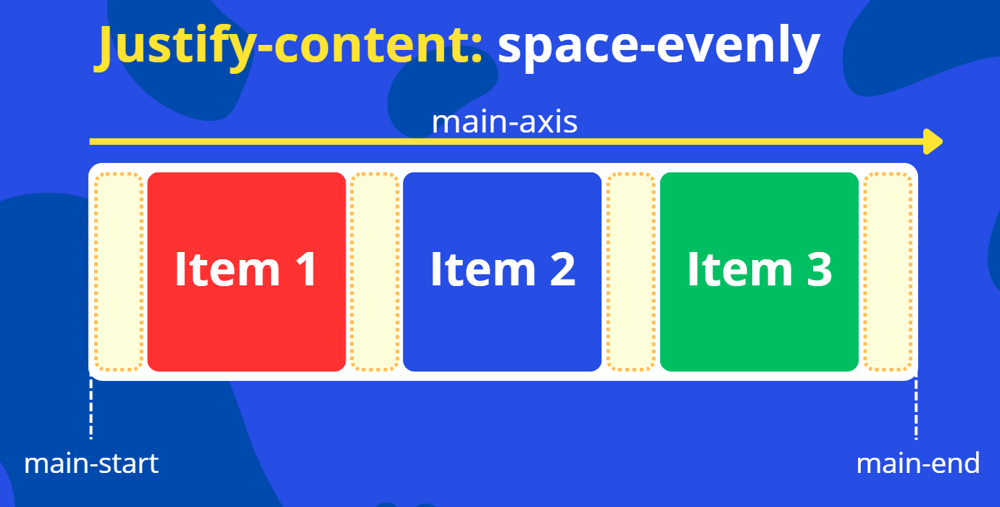
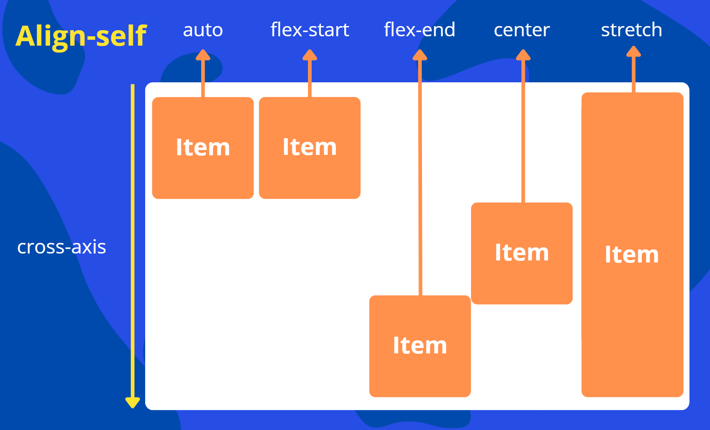

O Flexbox é um modelo de layout projetado para organizar e alinhar elementos dentro de um contêiner (o elemento pai) e seus itens (os elementos filhos diretos).
Para ativar o Flexbox, você precisa definir a propriedade display do elemento contêiner como flex.
Uma vez que display: flex; é aplicado ao contêiner, seus filhos diretos se tornam itens flexíveis e são organizados ao longo de um eixo principal (main axis) e um eixo transversal (cross axis).
Flex-Direction
Define a direção do eixo principal, que determina a direção em que os itens flexíveis são colocados no contêiner. Esse comando é utilizado no contêiner pai e não nos filhos.
row (padrão): Itens são dispostos horizontalmente, da esquerda para a direita.
row-reverse: Itens são dispostos horizontalmente, da direita para a esquerda.
column: Itens são dispostos verticalmente, de cima para baixo.
column-reverse: Itens são dispostos verticalmente, de baixo para cima.
Eixos
Flex-Wrap
Controla se os itens flexíveis devem quebrar para a próxima linha (ou coluna) quando não há espaço suficiente no contêiner.
nowrap (padrão): Todos os itens flexíveis tentarão se encaixar em uma única linha.
wrap: Os itens flexíveis quebrarão para múltiplas linhas, de cima para baixo.
wrap-reverse: Os itens flexíveis quebrarão para múltiplas linhas, de baixo para cima.
Exemplo:
Flex-Flow
É uma junção do flex-direction + flex-wrap.
Podemos substituir esses dois comandos:
div {
flex-direction:: row;
flex-wrap: nowrap;
}
Por esse:
div {
flex-flow: row nowrap;
}
Justify-Content
Alinha os itens flexíveis ao longo do eixo principal do contêiner. Distribui o espaço extra quando os itens não preenchem todo o contêiner.
Flex-Start
É o padrão; Itens agrupados no início do main start.
Flex-End
Itens agrupados no início do main end.
Center
Itens centralizados no eixo principal(main axis).
Space-Between
O primeiro item no início do main start e o último no main ende os outros itens distribuídos uniformemente.
Space-Evenly
Itens distribuídos uniformemente, com espaço igual entre eles e nas extremidades.

Space-Around
Divide o espaço do container uniformemente, distribui entre o número de itens e centraliza cada item na sua porção de espaço.
Space-Between, Space-Evenly, Space-Around
Uma imagem comparativa entre os três tipos de espaçamentos.
Columns
Justify-Content com Columns.
Align-Items
Alinha os itens flexíveis ao longo do eixo transversal (perpendicular ao eixo principal) do contêiner.
Stretch
É o padrão, itens esticam para preencher o contêiner no eixo transversal (se height não for definido).
Flex-Start
Itens agrupados no início do eixo transversal (cross start).
Flex-End
Itens agrupados no final do eixo transversal (cross end).
Center
Itens centralizados no eixo transversal (cross-axis).
Align-Content
É usada quando temos múltiplas linhas de itens flexíveis (ou seja, o flex-wrap está ativo e os itens quebraram para mais de uma linha).
Ela controla como o espaço extra no eixo cruzado (vertical, por padrão) será distribuído entre as linhas do container.
Stretch
É o padrão, linhas esticam para preencher o espaço restante.
Flex-Start
Linhas agrupadas no início do eixo transversal (cross start).
Flex-End
Linhas agrupadas no final do eixo transversal (cross end).
Center
Linhas centralizadas no eixo transversal (cross-axis).
Space-Between
Linhas distribuídas uniformemente, com a primeira linha no início (cross start) e a última no final (cross end).
Space-Evenly
Linhas não agrupadas nas extremidades, mas distribuirá o espaço igualmente em todo o contêiner.
Space-Around
Linhas distribuídas uniformemente, com espaço igual ao redor de cada linha.
Propriedades dos Itens Flex
As propriedades a seguir são aplicadas aos itens flexíveis (os elementos filhos diretos do contêiner flex).
Order
Define a ordem em que um item flexível aparece no contêiner. O valor padrão é 0. Itens com valores menores aparecem antes de itens com valores maiores.
.item-1 {
order: 2;
}
.item-2 {
order: 1;
}
Este item aparecerá antes do item-1.
Flex-Grow
Define a capacidade de um item flexível de crescer se houver espaço extra disponível no contêiner. Aceita um valor numérico (fator de crescimento). O valor padrão é 0 (não cresce).
.item-cresce {
flex-grow: 1;
/* Este item ocupará todo o espaço extra disponível */
}
.item-cresce-mais {
flex-grow: 2;
/* Este item crescerá o dobro do item com flex-grow: 1 */
}
Flex-Shrink
Define a capacidade de um item flexível de encolher se não houver espaço suficiente no contêiner. Aceita um valor numérico (fator de encolhimento). O valor padrão é 1 (encolhe).
.item-nao-encolhe {
flex-shrink: 0;
/* Este item não encolherá */
}
Flex-Basis
Define o tamanho inicial de um item flexível antes que o espaço restante seja distribuído. Pode ser um comprimento (px, %, em, etc.) ou a palavra-chave auto (padrão, usa o tamanho do conteúdo).
A propriedade flex é uma shorthand para flex-grow, flex-shrink e flex-basis.
.item-1 {
flex: 1 1 auto;
}
.item-fixo {
flex: 0 0 200px;
/* Não cresce, não encolhe, tem 200px de base */
}
Align-Self
Permite alinhar um item flexível individualmente ao longo do eixo transversal (cross-axis), sobrescrevendo o valor de align-items definido no contêiner.

auto Vai herdar a característica de alinhamento vertical do seu pai, seja ele o align-content ou align-items.
flex-start: É o alinhamento perto do cross start.
flex-end: É o alinhamento perto do cross end.
center: Calcula o espaço entre o cross start e o cross end e centraliza.
stretch Itens esticam para preencher o contêiner.
Gap
A propriedade gap (anteriormente grid-gap) permite definir o espaçamento entre as linhas e colunas em layouts Flexbox e Grid. No Flexbox, ela é usada para criar espaçamento entre os itens flexíveis.